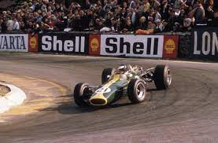
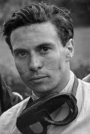
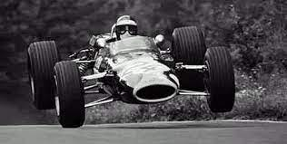

<html>
  <head>
    <meta charset="utf-8">
    <title>Jim Clark</title>
	<link rel="stylesheet" href="style/style.css">
  </head>
</html>

<h1>Jim Clark</h1

<p>Jim Clark est certainement l’un des meilleurs pilotes de Formule 1 de tous les temps.
 Son palmarès, qu’il a établit en seulement quelques années, est très impressionnant.
 Il a remporté 25 des 73 courses auxquelles il a participé, et a dû abandonner 28 fois. 
 Clark remporte surtout à 2 reprises le titre de champion du monde en 1963 et 1965.

Lors du Rallye de Grande-Bretagne en 1966, il arrivera même à rivaliser avec les meilleurs pilotes de rallye avant d’abandonner après une sortie de route.
 Malheuresement, Clark est victime d’un grave accident durant une course de Formule 2 en 1968 et perd la vie.
 Ce sera la fin d’une brève, mais brillante carrière d’un des plus grands pilotes du 20ème siècle.</p>
 
  
  
  

  <body background="image/fondnoir.jpg">
  <background-attachment:center center;>